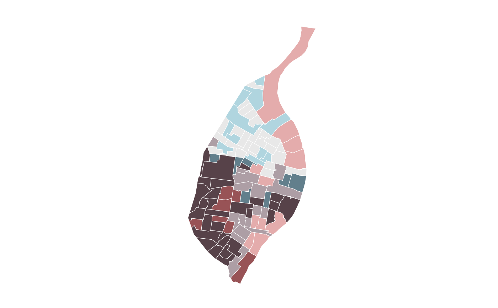

A theme for creating a simple, clean bivariate map using
ggplot2.
bi_theme(
base_family = "sans",
base_size = 24,
bg_color = "#ffffff",
font_color = "#000000",
...
)A character string representing the font family to be used in the map.
A number representing the base size used in the map.
A character string containing the hex value for the desired color of the map's background.
A character string containing the hex value for the desired color of the map's text.
Arguments to pass on to ggplot2's theme function
# load suggested dependencies
library(ggplot2)
library(sf)
# add breaks, 3x3
data <- bi_class(stl_race_income, x = pctWhite, y = medInc, style = "quantile", dim = 3)
#> old-style crs object detected; please recreate object with a recent sf::st_crs()
#> old-style crs object detected; please recreate object with a recent sf::st_crs()
# create map
ggplot() +
geom_sf(data = data, aes(fill = bi_class), color = "white", size = 0.1, show.legend = FALSE) +
bi_scale_fill(pal = "GrPink", dim = 3) +
bi_theme()
